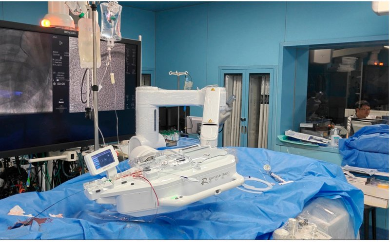

Commercial and clinical-stage systems · raysight_raysight2025
Raysight PCI
Raysight Medical PCI robot

1 / 2

- Family
- Commercial and clinical-stage systems (clinical-stage)
- Devices
- 3 channels: guide catheter, guidewire, balloon/stent device
- Degrees of freedom
- N.R.
- Push
- Not reported
- Twist
- Not reported
- Tested up to
- Animal
- Sim-to-real
- None found — No simulation-trained controller found for this robot.
Testing
- Highest level
- Animal
- What was tested
- 3 pigs, 34 episodes (liu2026_ai)
- Key numbers
- correct-command rate 83.6-95.6% (not task success)
Mechanism
- Push (translation)
- N.R.
- Twist (rotation)
- N.R.
- Device range
- N.R.
- Target anatomy
- coronary
Sensing and interface
- Force sensing
- N.R.
- Leader and haptics
- N.R.
- Imaging
- N.R.
- Sterility
- N.R.
Size
- Footprint (mm)
- N.R.
- Mass (kg)
- N.R.
Simulation
- Simulation model
- none found
- Sim-trained controller
- AI controller on live fluoroscopy in pig (liu2026_ai, full; sim_to_real flagged no in S7b)
Versions
- Lineage
- N.R.
Sources
- AI-Driven Robotic PCI: A Perception-to-Action Framework for Coronary Guidewire Control · Bioengineering, 2026 · doi:10.3390/bioengineering13080848 [liu2026_ai]
Notes
- Notes
- Interface proprietary.
This record
- Read level
- full — full (S8/S7b)
- Picture
- liu2026_ai Fig. 1(b), MDPI full-resolution figure https://mdpi-res.com/bioengineering/bioengineering-13-00848/article_deploy/html/images/bioengineering-13-00848-g001.png (1796x1176; article https://www.mdpi.com/2306-5354/13/8/848) ↗ — licence: CC BY 4.0; grade B
- Picture changes
- cropped (78,662)-(882,1172) of the 1796x1176 MDPI image, i.e. panel (b) right of the panel letter; no erasing; not upscaled
- Found by
- commercial: Search of commercial and clinical-stage systems.
- Data
- JSON · YAML:
records/robots/raysight_raysight2025.yaml - Correction
- Suggest a correction [repository not created yet]